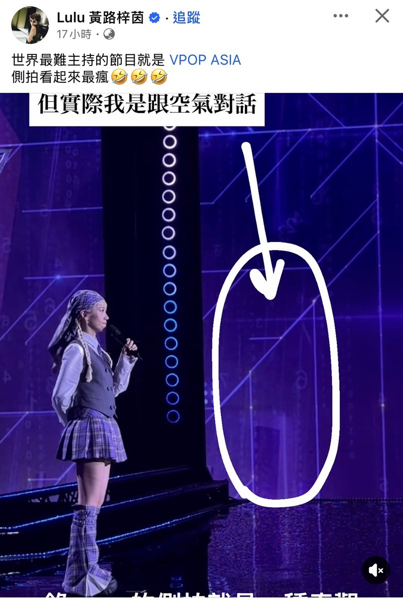
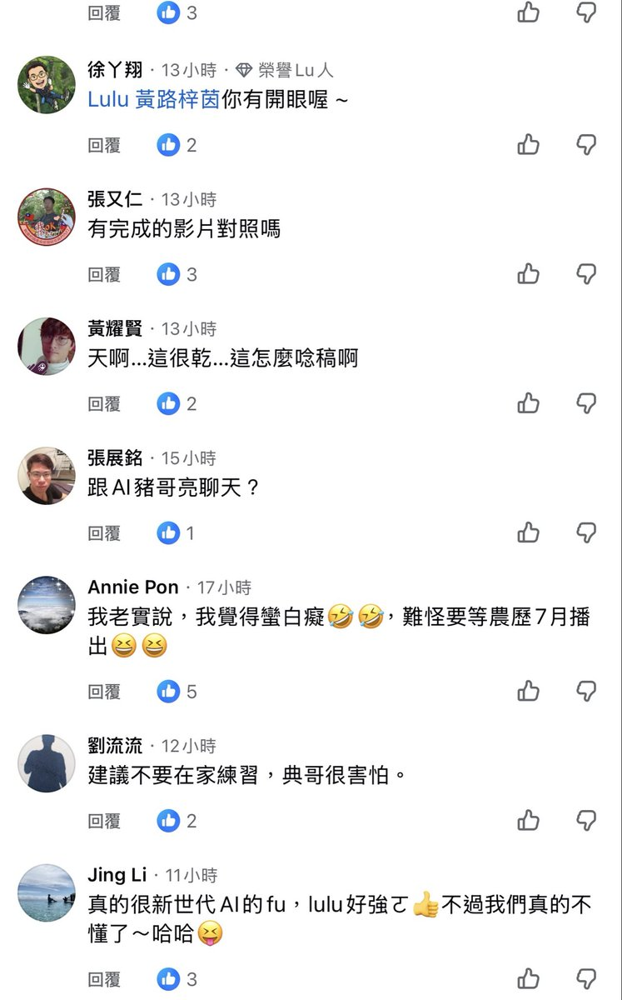

氫氣球
@allnightforlive
@mukai_V Fb正常能夠這麼刷到還留言的也不多會是看V的，反而是中老年人那種，可能在其他無相關帖下就開始騷擾跟開黃腔了🙂↕️
不能說他們還在開眼界，有的是真的沒道德，像之前比賽奪冠的人被說姿勢什麼的、
不管是說觀落陰還是說對空氣講話都一樣不尊重啊、打從說出這句話的時候就沒考量到弊端的


無界V 你的瑟瑟主播
@mukai_V
自己也是V的角度滑到第一張圖
第一個直接的感受是
這個側拍畫面和文字也太不專業、不尊重了吧
點開留言後就又覺得
這可能就是一個
進入大眾視野必經的陣痛期⋯⋯嗎？ https://t.co/oj5osITbPp